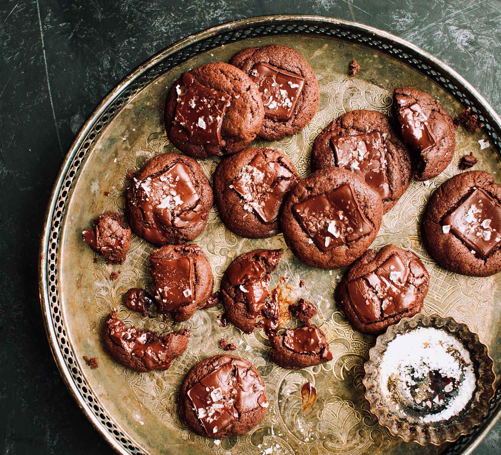

Phil’s Chickpea Chocolate Mint Chip Cookies
A delicious gluten, nut, and dairy free, plant-based cookie that still tastes just as good as the other, glutenous cookies out there. Chickpeas add a protein packed punch to every bite while chocolate and mint keep everything festive!

Ingredients
- 1 cup pitted Medjool dates
- 1 (540 mL/19 oz) can chickpeas, drained
- 1/2 cup coconut syrup
- 3/4 cup cocoa powder
- 1/4 cup sunflower seed butter
- 1 tsp baking powder
- 1 tsp mint extract
- 1 tsp vanilla
- 1 cup non-dairy dark chocolate chips
- Icing sugar to dust
Preparation
- 1Soak the dates in boiling water for 20 minutes or until soft. Drain the liquid from the dates and add dates to a food processor.
- 2Preheat oven to 350°F. Line a baking tray with parchment paper and set aside.
- 3Add the remaining ingredients to the food processor and blend until mixture is smooth and creamy. Transfer cookie dough to a bowl. Stir in chocolate chips.
- 4Scoop heaping tablespoons of dough 2-3 inches apart onto the prepared baking sheet. Flatten with the back of a spoon.
- 5Bake for 20-25 minutes or until tops start to crack. Let cookies cool on baking sheet for five minutes before transferring to a cooling rack. Using a sieve, dust tops of cookies lightly with icing sugar.
- Servings:
- Makes 12 cookies